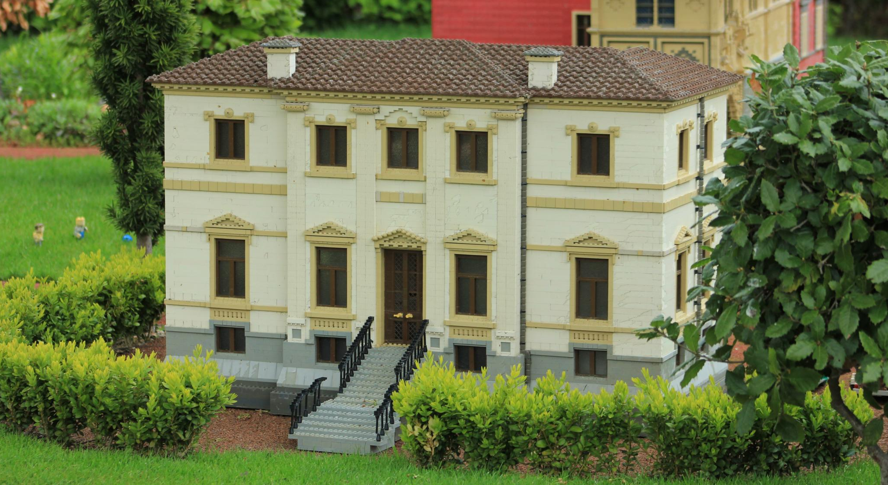
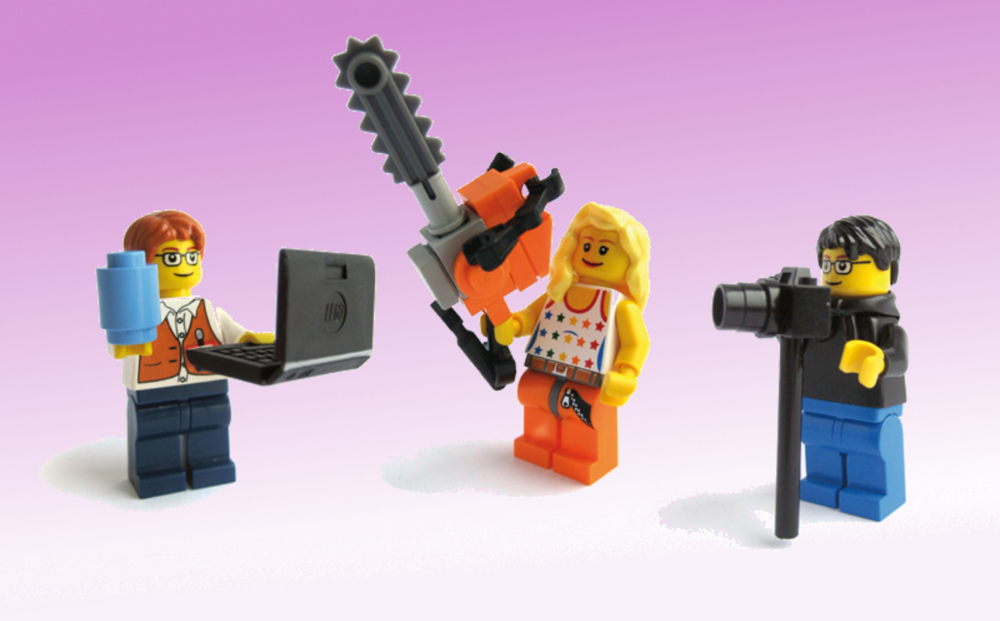
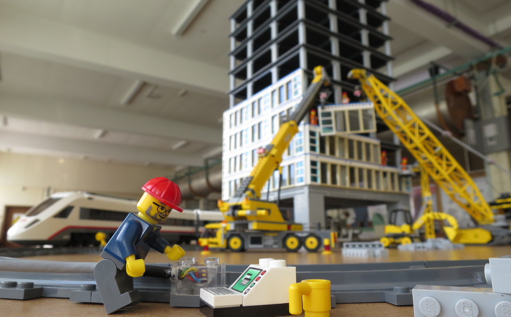
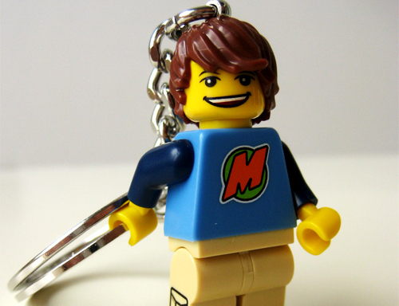
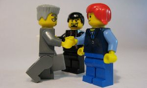

Welcome to a desirable locally global University
With over 700 students enrolling each year from all over the local world, you'll be part of a close-knit vibrant community that really believes in the joy of education.


Pushing the boundaries of education
We teach many students each year, and almost all of them achieve some level of qualification.

Research where it matters almost
With over 1 breakthrough each year, our estimate is that we'll have a nobel prize sometime in 2345.
I look back on my time here fondly as a time when I could afford to buy things
Evelyn. Q. Dot, class of 2018

Victory at Games
Once again the University has triumphed at the inter-university games.
Graduate Success
Another bumper year of graduates head out into the world.

Staff Rewarded
Excellent Web Apps lecturer rewarded with luxury villa.